Универсальный тестер MTester V2.07
Любому, кто работает с электроникой, требуется тестер радиоэлектронных компонентов. В большинстве случаев электронщики обходятся цифровым мультиметром. Им можно проверить с достаточной точностью самые частоиспользуемые электронные компоненты. Но, среди радиодеталей есть и такие, проверить которые рядовым мультиметром сложно, а порой и невозможно. К таким можно отнести полевые транзисторы (как MOSFET, так и J-FET). Также, обычный мультиметр не всегда имеет функцию замера ёмкости конденсаторов, в том числе и электролитических. И даже если такая функция имеется, то прибор, как правило, не измеряет ещё один очень важный параметр электролитических конденсаторов – эквивалентное последовательное сопротивление (ЭПС или ESR).
С недавнего времени стали доступны по цене универсальные измерители R, C, L и ESR. Многие из них обладают возможностью проверки практически всех ходовых радиодеталей.
На фото универсальный тестер R, C, L и ESR - MTester V2.07 (QS2015-T4). Он же LCR T4 Tester. Приобрести его можно на Алиэкспресс. Прибор без корпуса, с ним он стоит куда дороже.
Ссылки:
вариант без корпуса,
с корпусом.
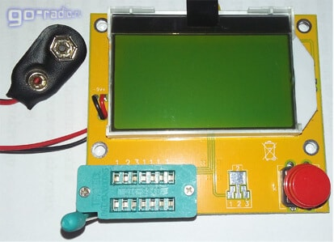
Рис. 1 - Универсальный тестер MTester V2.07
Тестер радиодеталей собран на микроконтроллере Atmega328p. Также на печатной плате (рис. 2) имеются SMD-транзисторы с маркировкой J6 (биполярный S9014), M6 (S9015), интегральный стабилизатор 78L05, прецизионный регулятор напряжения (регулируемый стабилитрон) TL431, SMD-диоды 1N4148, кварц на 8,042 МГц и планарные конденсаторы и резисторы.
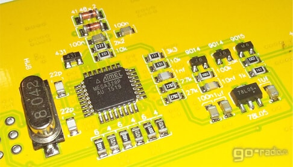
Рис. 2 - Печатная плата тестера MTester v2.07 на базе Atmega328
Прибор питается от батарейки на 9 В (типоразмер 6F22). Прибор можно питать и от стабилизированного блока питания.
На печатной плате тестера установлена ZIF-панель. Рядом указаны цифры 1,2,3,1,1,1,1. Дополнительные клеммы верхнего ряда ZIF-панели (те, которые 1,1,1,1) дублируют клемму под номером 1. Это для того, чтобы было легче устанавливать детали с разнесёнными выводами. Кстати, стоит отметить, что нижний ряд клемм дублирует клеммы 2 и 3. Для клеммы 2 отведено 3 дополнительных клеммы, а для клеммы 3 уже 4. В этом можно убедиться, осмотрев разводку печатных проводников на другой стороне печатной платы.
Измерение ёмкости и параметров электролитического конденсатора
Подключаем один вывод электролитического конденсатора к выводу 1, а другой к выводу 3. Можно подключит один из выводов к клемме 2. Прибор сам определяет, к каким выводам подключен конденсатор.
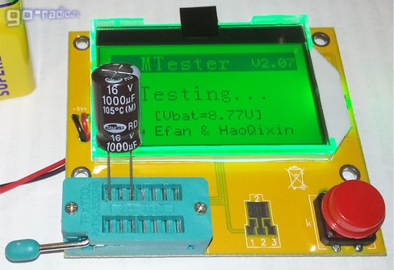
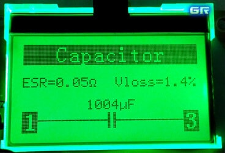
Рис. 3 - Измерение параметров электролитического конденсатора 1000 мкФ
Далее нажимаем на красную кнопку.
На экране результат (рис. 3): ёмкость - 1004 мкФ (1004 µF); ЭПС - 0,05 Ом (ESR = 0,05Ω); Vloss = 1,4%.
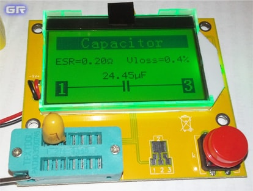
Рис. 4 - Результат измерения параметров танталового электролитического конденсатора 22мкФ×35В
ёмкость - 24,4 мкФ; ЭПС - 0,2 Ом; Vloss = 0,4%
Тестер можно использовать и для замера ёмкости у обычных конденсаторов с ёмкостью от 20 пикофарад (20pF). Если подключить к ZIF-Панели выносные щупы, то можно проверять и детали, выполненные в корпусах для поверхностного (SMT) монтажа.
Внимание! Перед тестированием конденсаторов, особенно электролитических, их необходимо разрядить! Иначе можно повредить прибор высоким остаточным напряжением. Особенно это относится к электролитам, выпаянным с плат.
Параметр Vloss.
При проверке конденсаторов, кроме ёмкости и ESR, универсальный тестер показывает ещё такой параметр, как Vloss. Этот параметр косвенно указывает на уровень утечки конденсатора. Как известно, реальный конденсатор имеет сопротивление диэлектрика между обкладками. Благодаря этому сопротивлению конденсатор медленно разряжается из-за, так называемого, тока утечки.
Так вот, при заряде конденсатора коротким импульсом тока напряжение на его обкладках достигает определённого уровня. Но, как только заряд конденсатора прекращается, напряжение на заряженном конденсаторе падает на очень небольшую величину. Разность между максимальным напряжением на конденсаторе и тем, что наблюдается после завершения заряда и выражают как Vloss. Чтобы было удобней, Vloss выражают в процентах.
Падение напряжения на обкладках конденсатора объясняют как внутренним рассеиванием заряда, так и сопротивлением между обкладками, которое имеется у всех конденсаторов, так как любой диэлектрик имеет, пусть и большое, но сопротивление.
Для керамических и электролитических конденсаторов высокий показатель Vloss в несколько процентов свидетельствует о плохом качестве конденсатора.
Проверка полевых J-FET и MOSFET транзисторов
Вставляем MOSFET-транзистор в панель так, чтобы его выводы были подключены к клеммам 1,2,3. Прибор сам определяет цоколёвку детали и выдает результат на дисплей.
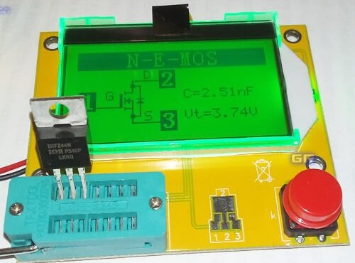
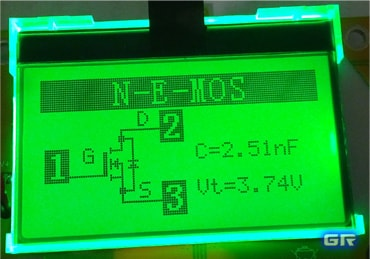
Рис. 5 - Проверка MOSFET-транзистора IRFZ44N универсальным тестером
На дисплее (рис. 5), кроме цоколёвки транзистора и его типа (n-канальный MOSFET), тестер указывает величину порогового напряжения открытия транзистора VGS(th) (Vt = 3,74V) и ёмкость затвора транзистора Ciis (C = 2,51nF). Если заглянуть в даташит на IRFZ44N и найти там значение VGS(th), то можно обнаружить, что оно находится в пределах 2 - 4 В.
Проверка биполярных транзисторов
У биполярных транзисторов измеряется коэффициент усиления hFE (он же h21э) и напряжение смещения Б-Э (открытия транзистора) Uf. Для кремниевых биполярных транзисторов напряжение смещения находится в пределах 0,6 ...0,7 В. Для КТ817Г оно составило 0,615 В (615mV) (рис. 6).
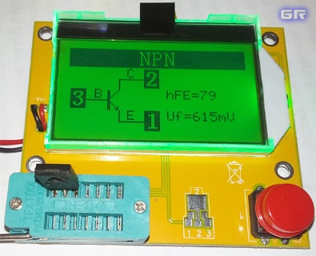
Рис. 6 - Параметры биполярного транзистора КТ817Г
Составные биполярные транзисторы мультитестер тоже распознаёт. Вот только параметры прибор определяет неверно. Не может составной транзистор иметь коэффициент усиления hFE = 37 (рис. 7). Для КТ973А минимальный hFE должен быть не менее 750.
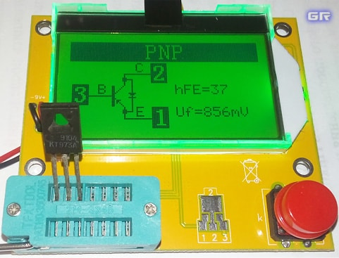
Рис. 6 - Параметры биполярного транзистора КТ973А типа p-n-p
Cтруктуру для КТ973А (PNP) и КТ972А (NPN) (рис. 7) определяет верно. Но вот всё остальное замеряет некорректно.
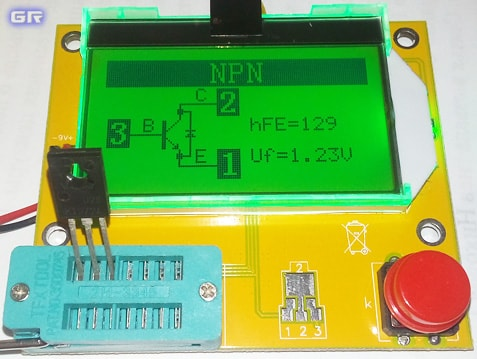
Рис. 7 - Некорректные результаты тестирования составного транзистора КТ972А
Стоит учесть, что если хотя бы один из переходов транзистора пробит, то тестер может определить его как диод.
Проверка диодов универсальным тестером
Образец для испытаний - диод 1N4007.
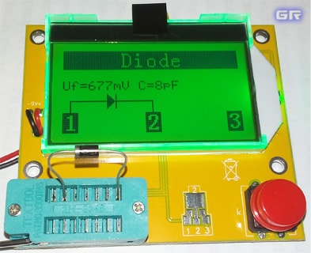
Рис. 8 - Проверка диода 1N4007
Для диодов указывается падение напряжения на p-n переходе в открытом состоянии Uf (Рис. 8). В техдокументации на диоды указывается как VF - Forward Voltage (иногда VFM). При разном прямом токе через диод величина этого параметра также меняется.
Для диода 1N4007: VF=677mV (0,677V). Это нормальное значение для низкочастотного выпрямительного диода. А вот у диодов Шоттки это значение ниже, поэтому их и рекомендуют применять в устройствах с низковольтным автономным питанием.
Кроме этого тестер замеряет и ёмкость p-n перехода (C=8pF).
В результате проверки диода КД106А выяснилось, что ёмкость перехода у него во много раз больше, чем у диода 1N4007 (184 пикофарады).
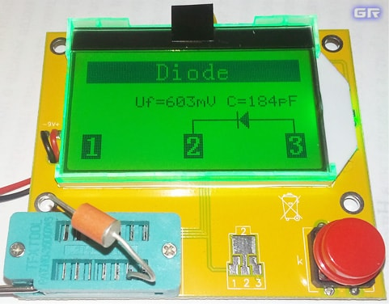
Рис. 9 - Результат проверки диода КД106А
Если вместо диода установить светодиод и включить проверку, то во время тестирования он будет мигать.
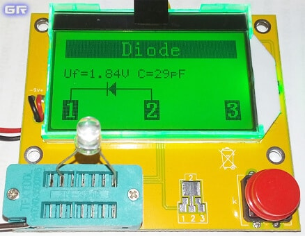
Рис. 10 - Результаты проверки светодиода
Для светодиодов тестер показывает ёмкость перехода и минимальное напряжение, при котором светодиод открывается и начинает излучать (рис. 10). Конкретно для этого красного светодиода оно составило Uf = 1,84V.
Универсальный тестер справляется и с проверкой сдвоенных диодов, которые можно встретить в компьютерных блоках питания, преобразователях напряжения автоусилителей, всевозможных блоках питания (рис. 10).
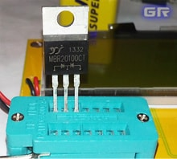
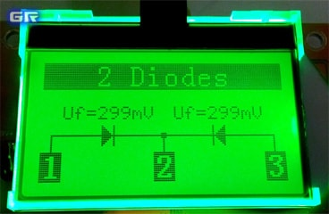
Рис. 11 - Проверка сдвоенного диода MBR20100CT
Тестер показывает падение напряжения на каждом из диодов Uf = 299mV (в даташитах указывается как VF), а также цоколёвку. Не забываем, что сдвоенные диоды бывают как с общим анодом, так и общим катодом.
Проверка резисторов
Данный тестер отлично справляется с замером сопротивления резисторов, в том числе переменных и подстроечных. На дисплее переменный или подстроечный резистор отображается в виде двух резисторов (рис. 12).
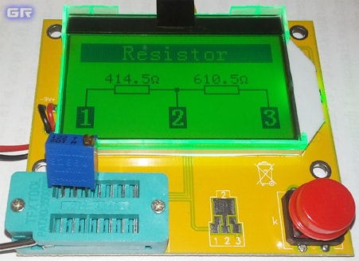
Рис. 12 - Проверка подстроечного резистора типа 3296 на 1 кОм
Также можно проверить постоянные резисторы с сопротивлением вплоть до долей ома (рис. 13).
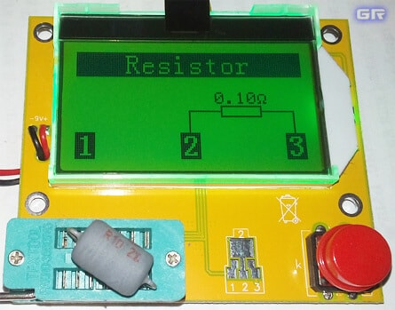
Рис. 13 - Измерение сопротивления низкоомных резисторов
Измерение индуктивности катушек и дросселей
На практике не менее востребована функция замера индуктивности у катушек и дросселей. И если на крупногабаритных изделиях наносят маркировку с указанием параметров, то вот на малогабаритных и SMD-индуктивностях такой маркировки нет. Прибор поможет и в этом случае (рис. 14).
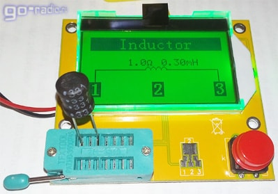
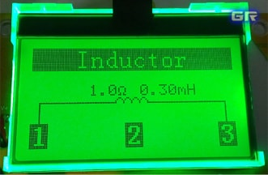
Рис. 14 - Измерение индуктивности дросселя на 330 мкГ с помощью тестера
Кроме индуктивности дросселя (0,3 мГн) тестер определил его сопротивление постоянному току - 1 Ом (1,0Ω).
Тестирование других элементов
Маломощные симисторы данный тестер проверяет без проблем (рис. 15).
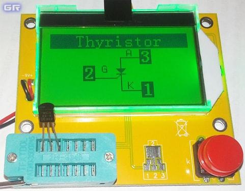
Рис. 15 - Определение цоколёвки тиристора MCR22-8
А вот более мощный тиристор BT151-800R в корпусе TO-220 прибор протестировать не смог и отобразил на дисплее надпись "? No, unknown or damaged part", что в вольном переводе означает "Отсутствует, неизвестная или повреждённая деталь".
Кроме всего прочего, универсальный тестер может измерять напряжение батареек и аккумуляторов.
Данным прибором можно проверить оптопары. Правда, проверить такие «составные» детали можно только в несколько этапов, поскольку они состоят минимум из двух изолированных между собой частей.
Излучающий диод подключается к выводам 1 и 2 оптопары (рис. 18). Подключаем их к клеммам прибора и тестер определил, что к его клеммам подключили диод и отобразил напряжение, при котором он начинает излучать Uf = 1,15V (рис. 16).
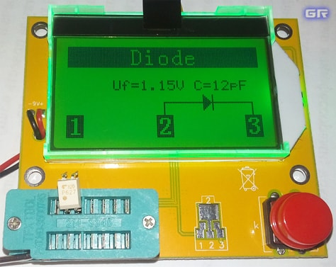
Рис. 16 - Проверка оптопары TLP627 со стороны излучающего диода
Далее подключаем к тестеру 3 и 4 выводы оптопары.
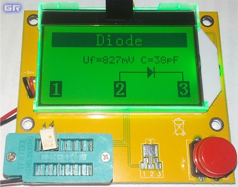
Рис. 17 - Проверка оптопары TLP627 со стороны фототранзистора
На этот раз тестер определил, что к нему подключили обычный диод (рис. 17). В этом нет ничего удивительного. Взгляните на внутреннюю структуру оптопары TLP627 (рис. 18) и вы увидите, что к выводам эмиттера и коллектора фототранзистора подключен диод. Он шунтирует выводы транзистора и тестер "видит" только его.
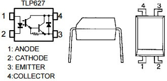
Рис. 18 - Внутренняя структура и цоколёвка оптопары TLP627
Так мы проверили исправность оптопары TLP627.
Какие детали этим тестером НЕ проверить.
- Мощные тиристоры. При проверке тиристора BT151-800R прибор показал на дисплее биполярный транзистор с нулевыми значениями hFE и Uf. Другой экземпляр тиристора определил как неисправный. Возможно, это действительно так и есть;
- Стабилитроны. Определяет как диод. Основных параметров стабилитрона вы не получите, но можно удостовериться в целостности P-N перехода. Производителем заявлено корректное распознавание стабилитронов с напряжением стабилизации менее 4,5V.
При ремонте всё-таки рекомендую не полагаться на показания прибора, а заменять стабилитрон новым, так как бывает, что стабилитроны исправны, но напряжение стабилизации «гуляет»; - Любые микросхемы, такие как интегральные стабилизаторы 78L05, 79L05 и им подобные.
- Динисторы. Собственно, это понятно, так как динистор открывается только при напряжении в несколько десятков вольт, например, 32 В, как у распространённого DB3;
- Ионисторы. Видимо из-за большого времени заряда;
- Варисторы определяет как конденсаторы;
- Однонаправленные супрессоры определяет как диоды.
Стоит понимать, что при проверке неисправных полупроводниковых элементов, прибор может определить тип элемента некорректно. Так, биполярный транзистор с одним пробитым p-n переходом, он может определить как диод. А вздувшийся электролитический конденсатор с огромной утечкой распознать как два встречно-включенных диода. Это свидетельствует о негодности радиодетали.
Но, стоит учесть тот факт, что также имеет место и некорректное определение значений из-за плохого контакта выводов детали в ZIF-панели. Поэтому в некоторых случаях следует повторно установить деталь в панель и провести проверку.